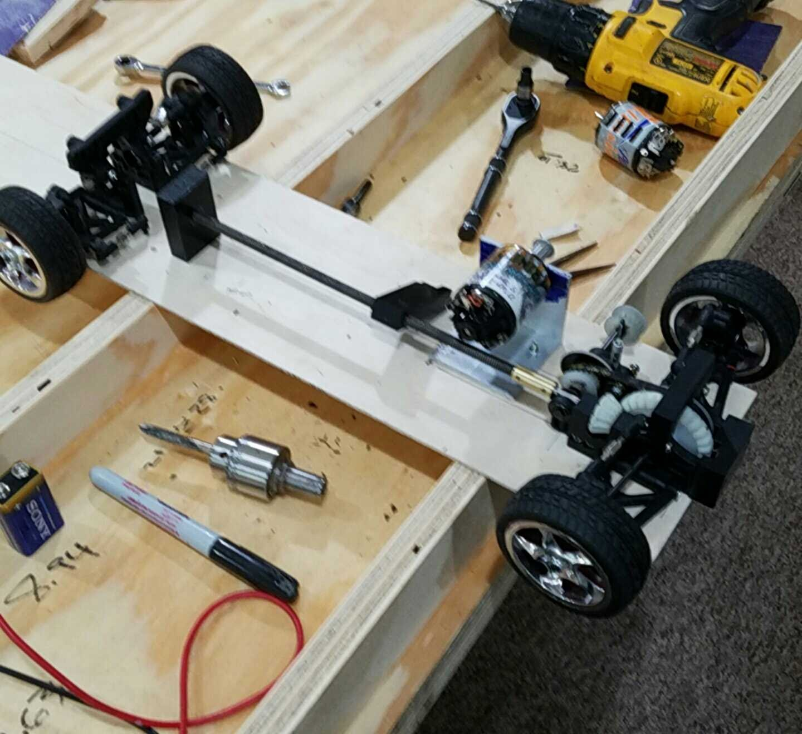
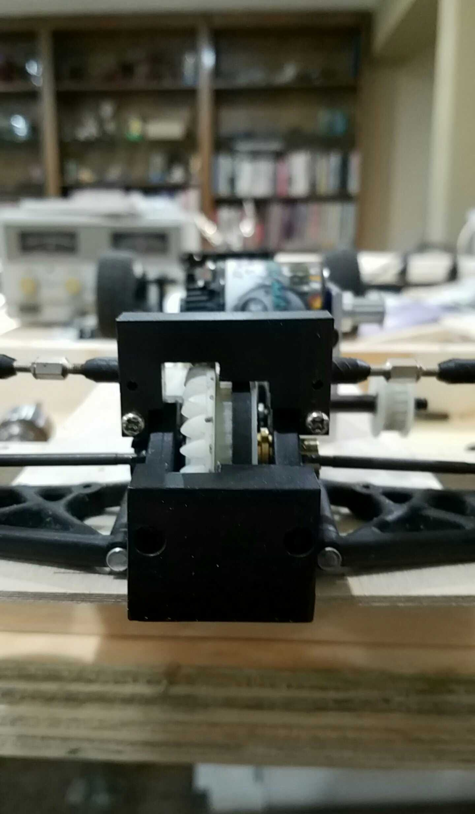
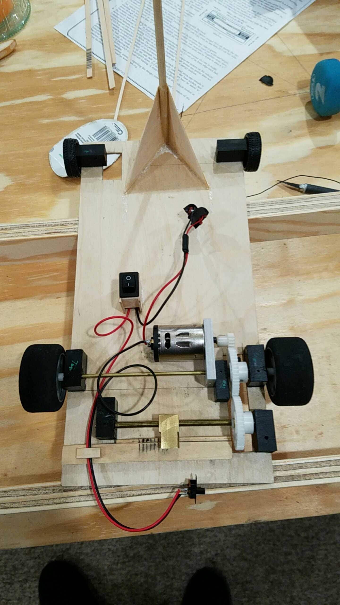
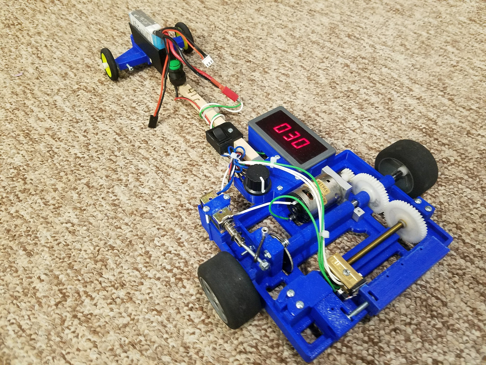

Electric Car
A Science Olympiad build. The car is set to drive a fixed distance, and the goal is to stop on a target as quickly and precisely as possible. It is an interesting engineering problem that pulls together traction, gearing, distance measurement, and braking. The design went through four prototypes.

01 / 04 · PROTOTYPE A
First Build: Traction Problems
The first prototype had poor grip and wandered off course. It set the next two requirements: better traction and repeatable distance measurement.

02 / 04 · MEASUREMENT V1
Gearing & Timing Counter
A geared timing counter measured distance traveled. It worked on the bench but was unreliable in field tests, so it was replaced.

03 / 04 · MEASUREMENT V2
Foam Wheels + Threaded Encoder
Foam wheels improved grip, and a threaded distance encoder replaced the timing counter. Readings became consistent from run to run.

04 / 04 · FINAL VERSION
Disk Brakes & Printed Chassis
Upgraded electronics, disk brakes, and a custom 3D-printed chassis. This version drove straight, stopped on target, and took 1st at regionals and 2nd at state.